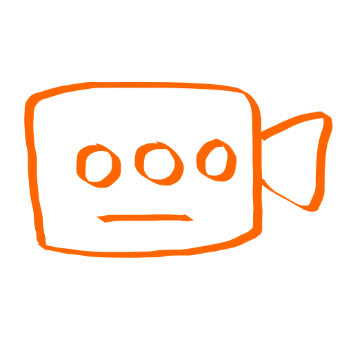
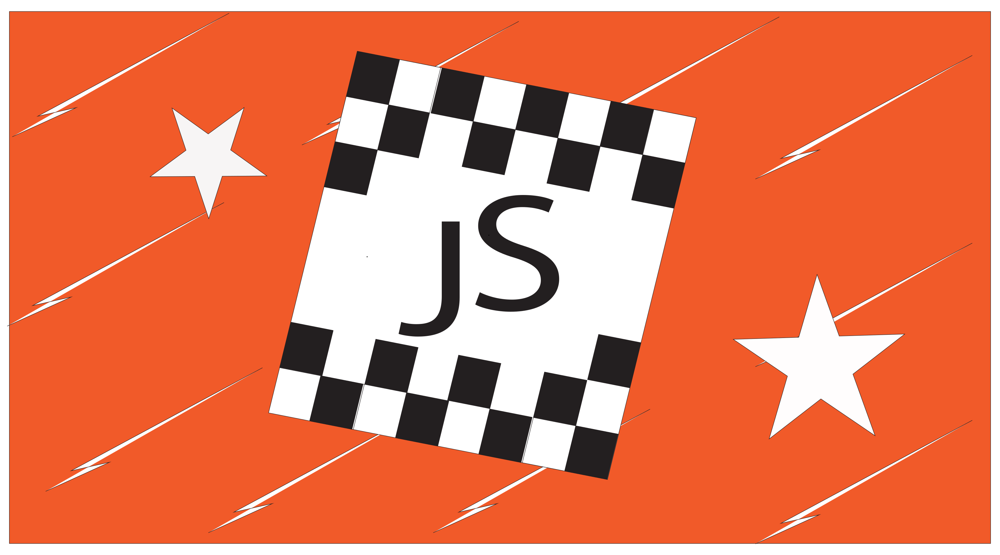

Adobe Illustrator on professionaalne vektorgraafika programm, mida kasutatakse logode, ikoonide, joonistuste ja trükiste loomiseks. Erinevalt tavalistest fotodest põhinevad selle pildid matemaatilistel punktidel, mis tähendab, et neid saab lõputult suurendada ilma kvaliteeti kaotamata.
Kasutades kujundeid, pen ja curvature ning shape builderi tööriistu, kujundsin oma individuaalne logo
Kasutades kujundeid, pen ja curvature ning shape builderi tööriistu, kujundsin oma individuaalne Tarkvara Arendusprotsessi Ainemapi ikoonide kogumik
| |
|
||
|  | |||
Kasutades kujundeid ja oma eelnevalt tehtud logo, kavandasin visiitkaart.
 |  |
Kasutades kujundeid, pen ja curvature ning shape builderi tööriistu, kujundasin Tarkvara Arendusprotsessi Ainemapi jaoks taustapilt
Kasutades Pen tööriista, joonistasin oma valitud objekt üle kolmnurksete polügonidega.
 |